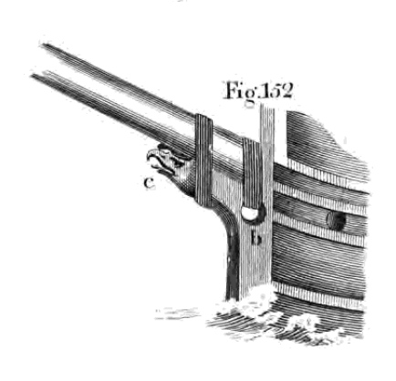
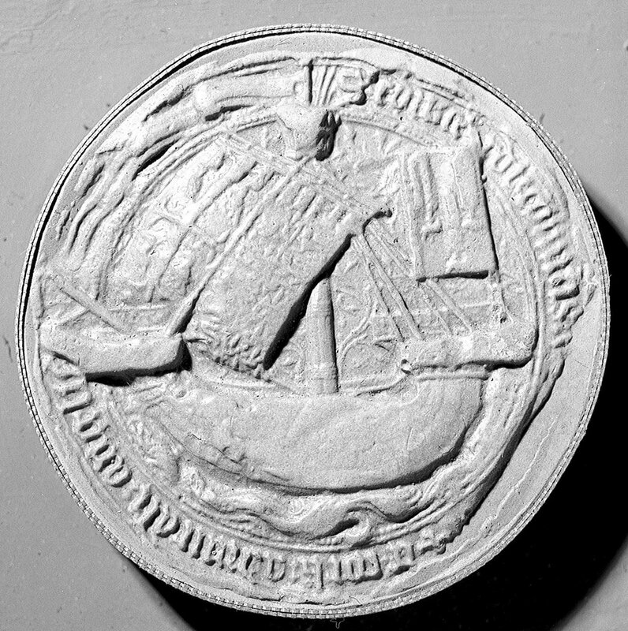
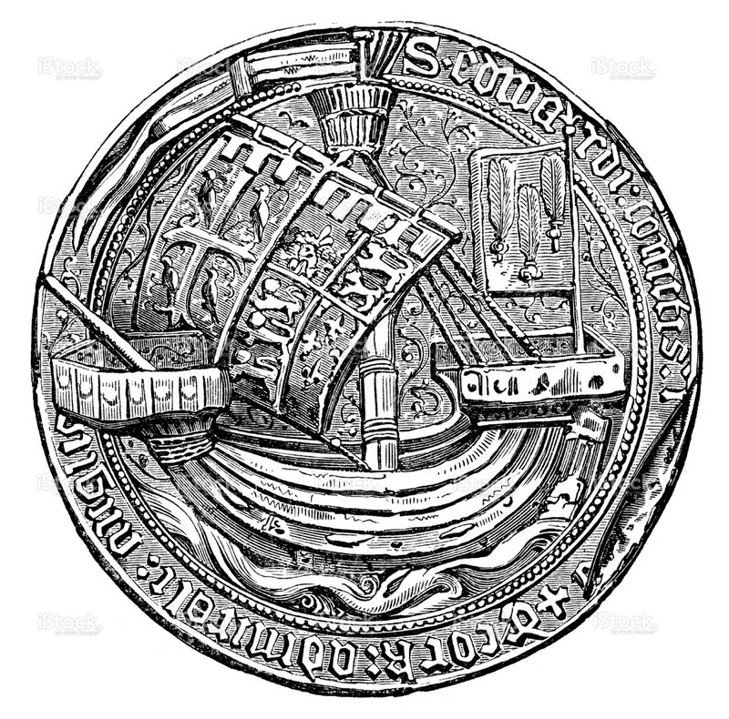
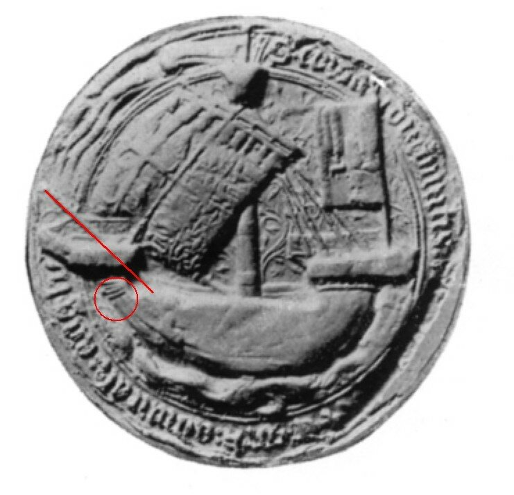
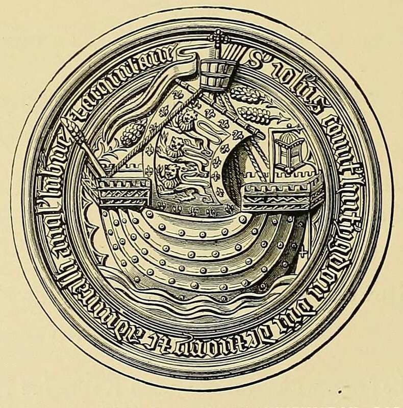

Ватер-вулинги
Федот, да не тот.
У нас появилось несколько гипотез относительно того, какую функцию могут выполнять тросовые шлаги, обернутые вокруг верхней части форштевня на корабле святого Иуды с витража в Молверне, а также на английских золотых монетах XIV-XV вв. Пусть простят мои читатели, но обсуждение мы начнем не с уже выдвинутых предположений, а с того, которое еще не прозвучало: тросовые шлаги могли быть частью ватер-вулинга, крепления бушприта к носовой части судна.

Изображение ватер-вулинга из книги Darcy Lever, The Young Sea Officer's Sheet Anchor, 1808, с.20
Первый художник, изобразивший этот гаджет, мог попросту «забыть» о бушприте, или пожертвовать им в интересах намеченной композиции произведения. А так как плагиат родился не сегодня, то дальше все пошло-поехало, изображение копировали друг у друга таким, как оно появилось у первого автора. Может быть такое? Да сколько угодно, вы сами это утверждали в комментариях к предыдущему посту.
Но давайте изучим этот вопрос повнимательней. Как известно, первые бушприты на английских кораблях появились в тринадцатом веке. Так что в момент появления первых изображений с тросовыми шлагами на форштевне, а это четырнадцатый век, должны были существовать изображения, где этот гаджет соседствует с бушпритом. И такие изображения действительно имеются. К примеру, на печати первого в истории лорда-адмирала Англии Эдуарда, графа Ратленда, занявшего должность в 1391 году.

Печать адмирала Англии (1391-98) Эдуарда, графа Ратленда (Edward Earl Rutland and Cork), National Maritime Museum, Greenwich, London
Мы можем отметить, что бушприт проходит в стороне от верхней части форштевня, на которой находятся тросовые шлаги, ближе к корме. Если на гравюре, сделанной на основании этой печати, это не так очевидно,

то по слепку мы можем это заключить однозначно: тросовые кольца не охватывают пятку бушприта.

Чтобы подкрепить свои предположения, рассмотрим еще одно изображение. На этот раз это будет слепок с печати другого адмирала Англии, Джона Холланда, 2-го графа Хантингдона, 2-го герцога Эксетера, лорд-адмирала Англии с 1435 по 1447 гг.

Seal of John de Holland, Earl of Huntingdon, Lord of Ivry, and Admiral of England, Ireland, and Aquitaine, 1435
Illustrated catalogue of the heraldic exhibition by Burlington Fine Arts Club. Published 1896. №69
Это изображение считается самым лучшим изображением, которое было сделано для печатей той эпохи. На нем есть бушприт, но отсутствует интересующий нас гаджет. Мы можем заключить, что если бы тросы вокруг верхней части форштевня были частью стоячего такелажа, к которому относятся ватер-вулинги бушприта, то они обязательно присутствовали бы на этом изображении.
Изображения кораблей с тросовыми шлагами вокруг форштевня, по которым нельзя вывести никакой связи между этим гаджетом и ватер-вулингами бушприта настолько многочисленны, что нам придется отказаться от этой гипотезы.
Продолжим в следующий раз.